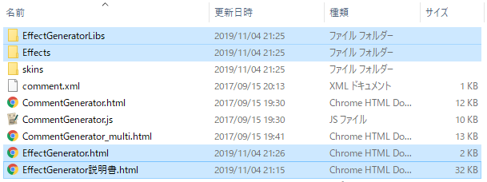

HTML5エフェクトジェネレーター Ver. 取扱説明書
このツールは何？
OBSによるライブ配信に投稿された特定のコメントに反応して、
自動で配信画面上にエフェクト（画像、音声、映像）を出力するツールです。
これを使えば、たとえば「初見」を含むコメントが投稿されたときに
「初見さんいらっしゃい」という画像を表示する、ということが可能です。
構成ファイル
このツールは以下の内容で構成されています。
Effects（サンプル素材フォルダ。不要な素材は削除してかまいません）
EffectGeneratorLibs（プログラム）
EffectGenerator.html（設定ファイル）
EffectGenerator説明書.html（いま見てるコレ）
★これは初めて入手する方向けのデータです（注意喚起用。削除してかまいません）
導入に必要なもの
このツールが使用可能な配信ソフトはOBS Studioです。
(動作確認していませんが、たぶんStreamlabs OBSのほうでも動くと思います。)
このツールは下記の2ツールと連携することで動作します。
あらかじめ導入しておいてください。
また、このツールをお使いいただくにあたっては、
パソコンを「ファイル名拡張子を表示する」設定にしておくことをお勧めします。
拡張子が表示されていない（あるいは拡張子が何のことかわからない）場合、
「windows〇〇 拡張子 表示」で検索してみてください。
OBS Studioへの導入
当ツールの構成内容は、すべて、HTML5コメントジェネレーターの
「setting.xml」や「CommentGenerator.html」がある場所と同じ階層に置いてください。

図. こんな感じになるように
その後OBS Studioを起動し、以下の設定を行います。
- ソースの追加
- ソース欄のプラスボタンを押して「ブラウザ」を選択する。
- 新規作成で、好きなソース名を入力する。
- 「OK」を押す。
- プロパティの設定
- 「ローカルファイル」にチェックを入れる。
- Local file行の右端の「参照」を押して「EffectGenerator.html」を探し、選択して「開く」。
- 「幅」と「高さ」を入力する。配信の出力サイズに合わせることを推奨（960x540, 1280x720, 1920x1080など）。★ここで設定した幅と高さと同じ値を、後述する「全体の設定」でも設定してください。
- 「OBSに音声を再ルーティングする」にチェックを入れる。
- 「表示されていないときにソースをシャットダウン」にチェックを入れる。
- 「OK」を押す。
- オーディオの詳細プロパティの設定
- 音声ミキサー欄の各ソース右端にある歯車ボタン（どれでもよい）を押して「オーディオの詳細プロパティ」を選択する。
- エフェクトジェネレータ―の行の「音声モニタリング」について、
エフェクトの音を、配信しながら自分も聞きたいなら「モニターと出力」、
視聴者が聞ければそれでよくて自分は聞かなくていいなら「モニターオフ」を選択する。 - 「閉じる」を押す。
- クロマキーの設定（必要なら）
- ソース欄のエフェクトジェネレータ―を右クリックして「フィルタ」を選択する。
- 「エフェクトフィルタ」欄のプラスボタンを押して「クロマキー」を選択して「OK」を押す。
- 「色キーの種類」で「Custom」を選択する。
- 「色を選択」を押して、自分が使用するBB素材の背景色を指定して「OK」を押す。
- 「類似性（1-1000）」を200～300に設定する。（適宜調整してください）
- 「閉じる」を押す。
エフェクトの登録
エフェクトの登録は、「EffectGenerator.html」を直接編集することで行います。
このファイルを「メモ帳」などのエディタで開いて編集してください。
編集した後は必ず上書き保存を行いましょう。その際にOBSを起動している場合は、
編集をOBSに反映させるためにOBSのブラウザソースを更新しましょう。
（「表示されていないときにソースをシャットダウン」にチェックを入れていれば、
ソース右側の目玉ボタンを2回押して非表示化→表示化することでブラウザソースを更新できます）
以下、説明が多くて「ウッ」となるかもしれませんが、基本的には、
「すでに登録してあるエフェクトをコピペしてsrcやwordなどを変えるだけ」で済みます。
全体の設定
全体設定は次のような構造になっています。
<canvas width="1280" height="720" ></canvas>
赤い部分は設定の種類を意味します。（あんまり気にしなくて大丈夫です）
この部分は変更しないようにしてください。このあいだにパラメータを書いていきます。
パラメータはそれぞれ「パラメータ名」と「設定値」のふたつで構成されています。
青い部分がパラメータ名で、黄色の部分が設定値です。
パラメータを設定する際には次のルールに従ってください。
- パラメータ名と設定値は「半角のイコール」で繋いでください。
- 設定値は「半角のダブルクォーテーション」で囲んでください。
- パラメータとパラメータの間には「ひとつ以上の半角スペース」を挟んで下さい。
パラメータ一覧
画面サイズ、全体の音量の調節、その他全般的な設定をすることができます。
widthとheightは省略不可。配信の出力サイズに合わせて設定するとよいでしょう。
あとのパラメータはすべて省略可能です。
| パラメータ名 | 説明 | 省略可 | 省略した場合 |
| width | 画面全体の幅。 | × | |
| height | 画面全体の高さ。 | × | |
| volume | 全体の音量。0～100で指定する。ここで指定した音量に、さらに音声素材に個別に設定した音量を掛けたものが、最終的に再生されるときの音量になる。 | ○ | 50 |
| butting | エフェクトAを再生している最中に別のエフェクトBが再生されようとしたときに、どう処理するかの設定。Bを完全に無視するならば「ignore」、Aを即中断してBを再生するならば「stop」、Aの後でBを再生するならば「wait」を設定する。（同時に再生できるようにするのはいまの設計上難しい…） | ○ | ignore |
| demo | 登録したエフェクトの自動デモプレイを再生するための設定。「true」にしておくと、OBSでソースを表示したときに自動でエフェクトのデモプレイが流れる（ブラウザで動作確認している場合は「自動デモ」ボタンを押すことでデモを開始できる）。配信するときは「false」にしておくこと。 | ○ | false |
| FPS | 1秒間に何回画面を書き換えるか。増やすと動作が重くなる。30以下推奨。 | ○ | 30 |
| flushcomment | 戯れに実装した機能。「true」にすると、どこかから怒られそうな感じでコメントが配信画面に流れる。 | ○ | false |
設定例
<canvas width="1280" height="720" butting="stop" volume="50"></canvas>
各エフェクトの設定
エフェクトには「画像」「音声」「映像」の三種類あります。
それぞれ、次のような構造になっています。
<img src="assets/sample.gif" word="こんにちは" > <audio src="assets/sample.mp3" word="初見" ></audio> <video src="assets/sample.mp4" word="ナイス" ></video>
共通のパラメータ一覧
「画像」「音声」「映像」いずれのエフェクトも、共通のパラメータとして以下のものを持っています。
srcとwordは省略不可です。（他は省略してよい）
| パラメータ名 | 説明 | 省略可 | 省略した場合 |
| src | 素材ファイルの場所。省略不可。 | × | |
| word | 反応するコメント。「太郎,たろう,タロウ」のようにカンマ区切りで複数指定できる（カンマの前後に空白を入れないこと）。wordパラメータは原則として省略不可だが、regexpパラメータを設定した場合に限り、省略可。 | × | |
| priority | 優先度。整数で指定する。コメントとwordパラメータがマッチしたエフェクトが複数ある場合、これが大きいほうが優先される。 | ○ | 0 |
| fuzzy | 曖昧に検索するかどうか。「true」を指定すると表記ゆれに対応しやすくなる。具体的には、「true」にした場合、コメントを《全角英数→半角英数》《アルファベット大文字→小文字》《半角カナ→全角カナ》《ひらがな→カタカナ》に変換してから判定を行う。（たとえば、「*＊aAａＡあｱア」というコメントは「**aaaaアアア」に変換される。） | ○ | false |
| match | コメントとwordがマッチしているかを判定する際の、判定の仕方を指定する。「コメントがwordを含むか？」で判定するなら「include」（初期値）、「wordで始まるか？」で判定するなら「first」、「wordで終わるか？」で判定するなら「last」、「wordに完全一致するか？」で判定するなら「equal」。 | ○ | include |
| regexp | 正規表現が使用可能。これを設定した場合、word、fuzzyパラメータは無視される。たとえば「^\d{4}$」と設定すると、半角数字4文字なら「0123」でも「8888」でもすべてマッチする。（正規表現に関する詳しい説明は省きます。「javascript 正規表現」などでググってみてください） | ○ |
優先度について補足
エフェクトの候補が複数あって、しかもどれもpriorityパラメータが同じである場合が考えられます。
その際は、以下のような規則でひとつのエフェクトが選択されます。
-
「初見」にエフェクトA、「こんにちは」にエフェクトBが割り当てられていて
「初見です。こんにちは」というコメントが来た場合
｢この場合、エフェクトBが優先されます。
（マッチした文字列が最も長いものが優先される。「初見」は2文字、「こんにちは」は5文字） -
「初見」に2つのエフェクトA、Bが割り当てられていて
「初見です」というコメントが来た場合
｢この場合、AとBのどちらかランダムで選択されます。
（「マッチした文字列が最も長いもの」がひとつに絞れない場合、ランダムに決定される）
画像エフェクト
画像エフェクトを表示します。
対応するファイル形式はpng, gif, jpgなど。
GIF動画も画像エフェクトです。ご注意ください。
パラメータ一覧
| パラメータ名 | 説明 | 省略可 | 省略した場合 |
| time | 表示する時間（秒単位）。 | ○ | 2 |
| fade | フェードイン･アウトする時間（秒単位）。 | ○ | 0 |
| x | x座標。ゼロだと左端に表示する。 | ○ | 0 |
| y | y座標。ゼロだと上端に表示する。 | ○ | 0 |
| width | 幅。省略すると、素材の元サイズでそのまま表示される。 | ○ | 元サイズ |
| height | 高さ。省略すると、素材の元サイズでそのまま表示される。 | ○ | 元サイズ |
| se | 効果音名を指定すると、効果音が付けられる。効果音の登録方法は下記参照。 | ○ | 効果音なし |
設定例
<img src="assets/sample-image.gif" word="サンプル画像" fade="0.5" time="3" se="piko">
画像用効果音
これを登録しておくと、画像エフェクトに効果音を付けることができます。
ここで設定した「se」パラメータの値を、画像エフェクトの「se」パラメータにも設定してください。
なお、音声エフェクトとは別枠で登録する必要があります。
パラメータ一覧
| パラメータ名 | 説明 | 省略可 | 省略した場合 |
| se | 効果音名。識別できればなんでもいい。 | × | |
| volume | 音量を0～100で指定する。 | ○ | 100 |
設定例
<audio src="assets/sample-piko.mp3" se="piko" volume="100" ></audio>
音声エフェクト
音声エフェクトを再生します。
対応するファイル形式はwav, mp3, ogg, m4aなど。
パラメータ一覧
| パラメータ名 | 説明 | 省略可 | 省略した場合 |
| volume | 音量を0～100で指定する。 | ○ | 100 |
設定例
<audio src="assets/sample-audio.mp3" word="サンプル音声" volume="100" ></audio>
映像エフェクト
映像エフェクトを表示します。
対応するファイル形式はmp4, webmなど。
パラメータ一覧
以下のパラメータのほかに、x、y、width、height、volume、fadeが設定できます。
それらの意味は画像エフェクトや音声エフェクトと同じです。
keycolorパラメータを指定するとクロマキー（特定の色を透明にする）機能が使えますが、
処理がけっこう重いので、不具合が生じる場合はOBS側のフィルタを使用してみてください。
| パラメータ名 | 説明 | 省略可 | 省略した場合 |
| loop | ループに関する設定。再生する回数を1～10で指定する。省略した場合、ふつうに1回再生して終わり。 | ○ | 1 |
| keycolor | クロマキーの色の設定。ここで指定した色が透明になる。指定する場合は「#0000ff」のように「#RRGGBB」の形で指定する。あるいは「auto」を指定すると自動で判定を行う。「none」だとクロマキー無効で、デフォルトはこれ。 | ○ | none |
設定例
<video src="assets/sample-videp.mp4" word="サンプル映像" volume="100" keycolor="auto" ></video>
エフェクトの動作確認
登録したエフェクトの動作確認をする方法を、以下のA～Cに示します。
とりあえずAで動作確認し、さらにクロマキーの設定やOBS上での動作を確認したい場合は
BあるいはC（限定公開＋自演コメント）で動作確認するとよいでしょう。
-
「EffectGenerator.html」を、エディタではなくGoogle ChromeなどのWebブラウザでふつうに開く。
画面下部にテスト用のボタンがあるので（見えなければズーム率を小さくしてみてください）それを押す。
ただしこの方法で動作確認する場合、Webブラウザのセキュリティ上しょうがないのですが、
以下の機能が使用できません。（OBSでは大丈夫なので安心してください）- マルチコメントビューアとの連携
- クロマキー機能
-
「全体の設定」でデモプレイを有効にして（demo="true"を指定して）OBSを起動し、
OBSのプレビュー画面を確認する。
これによって、OBSのプレビュー画面上で、登録したエフェクトのデモプレイを見ることができます。
ただしこの方法で動作確認する場合、テスト用のボタンが押せないため、任意のエフェクトを出すことができません。 -
実際に配信し、コメントしてみて、OBSのプレビュー画面を確認する。
面倒ですが、これが一番確実です。
その他
アップデートの利用方法
HTML5エフェクトジェネレーターのダウンロードページから、
最新版（アップデート用）をダウンロードしてください。
zipを展開して出てきた中身で既存のファイルを上書きすればアップデート完了です。
「★これは初めて入手する方向けのデータです」というファイルが入っている場合、
そのデータはアップデート用ではありませんので、上書きしないでください。
アップデート履歴
| Ver.0.0.5 | ランダムに再生されるエフェクトを正しくテストできなかった件を修正。 |
| Ver.0.0.4 | fuzzy="true"指定時にwordパラメータの値も曖昧化するように修正。 |
| Ver.0.0.3 | 一般公開に向けていろいろと整備。 |
| Ver.0.0.2 | クロマキーの調整他。 |
| Ver.0.0.1 | クロマキーがたまに機能していなかった件を修正。 |
| Ver.0.0.0 | 試作。 |
関連リンク
- マルチコメントビューア
https://ryu-s.github.io/app/multicommentviewer - HTML5コメントジェネレーター
http://www.kilinbox.net/2016/01/HCG.html - HTML5コメントジェネレーター改
http://ch.nicovideo.jp/twinstraycat/blomaga/ar1410238
謝辞
当ツールを製作するきっかけをくださり、
またデバッグにも協力してくださったおりまーたろう氏（@bassodaisuki）、
改変元であるHTML5コメントジェネレーターを作ってくださったkilin氏（link）に感謝します。
免責
当ツールはご自由にお使いいただいてかまいませんが、
ご使用にあたって生じた不利益について作者は一切責任を負わないものとします。
ガンジー（@GungeeSpla）